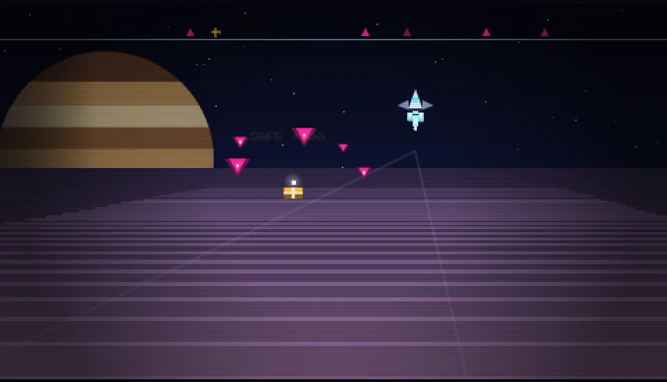
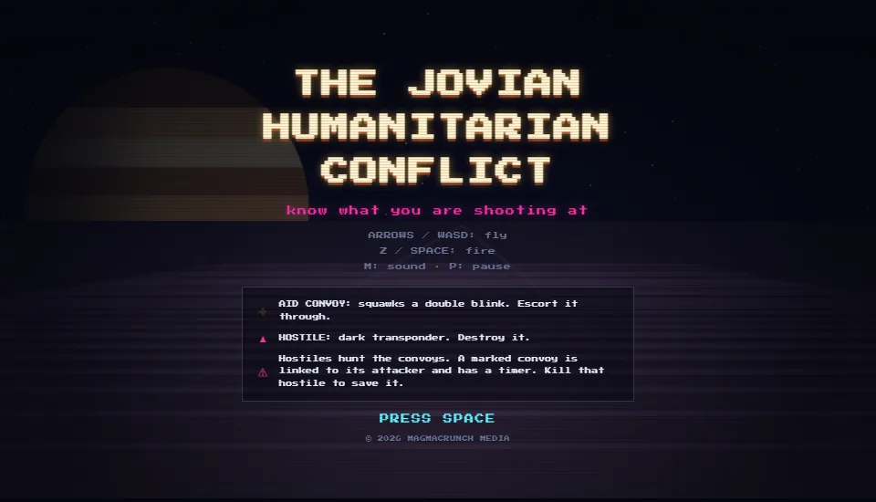

on-rails over jupiter · read the transponder before you fire
An on-rails shooter over the cloud decks of Jupiter. Aid convoys fly among the hostiles, blinking a double-flash transponder.
Shoot the hostiles hunting them and never the convoys: three convoy kills and the run is over. Know what you are shooting at.

game by magmacrunch media
music "The Jovian Humanitarian Conflict" by Jimmi, from the album JIMMI. The game takes its name and its subject from the track.